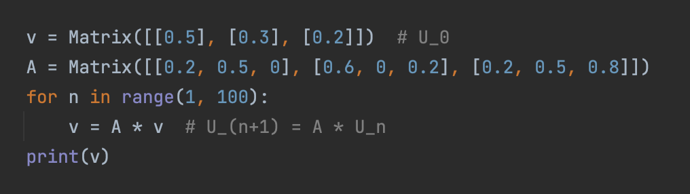

Mir unsrem Code ist viel mehr möglich. Das schöne ist, hier kann man viel genauer arbeiten und Methoden wie for-Schleifen und if-Abfragen verwenden. Man kann zum Beispiel eine Folge an Polynomen definieren, zum Beispiel die Tschebbycheff Polynome, indem man eine Rekursive Folge berechnet. Für eine Folge von Funktionen könnte man ihre Integrale untersuchen, um mehr über die Folge zu lernen. Auch zufällige Ereignisse kann man gut untersuchen, zum Beispiel die durschnittliche Norm von Eigenwerten von Matrizen mit bestimmter Verteilung von Einträgen oder ähnliches betrachten. Für Konvergenzfragen und Stabilität kann man auf unser Programm zurückgreifen. Fragt man sich wie gut ein Algorithmus gegen eine Lösung konvergiert, so kann man mit unserem Programm die Lösung bestimmen und die Konvergenz untersuchen! Es gibt kaum Grenzen, weshalb sich das Arbeiten mit unserem Modul für eine fortgeschrittene Arbeit sehr lohnt!
Für ein genaues Verständnis der Funktionen vom Modul kann man unseren Code lesen, jedoch empfiehlt sich diese Liste einfach durchzulesen/in dieser Liste nachzuschlagen.
| Ausdruck | Funktion | Beispiel |
|---|---|---|
| Function(f(x)) | Definiert Funktionen | f = Function("sin(x^2-1)") |
| Polynom("a_n*x^n + ... + a_0") | Definiert Polynom | P = Polynom("x^4 -3x^2 -1x +2") |
| Matrix([[a_11,...,a_1n],...,[a_n1,...,a_nn]]) | Definiert Matrizen | A = Matrix([[1,2,3],[4,2,1],[0,0.1,18]) |
Jeder diese Klassen hat viele Funktionen. Man kann sie zum Beispiel ausschreiben: print(A).
| Ausdruck | Funktion | Beispiel |
|---|---|---|
| cos, arccos, cosh, arccosh, sin, arcsin, sinh, arcsinh, tan, arctan, tanh, arctanh |
Elementare trigonometrischen Funktionen | cos(pi) |
| exp(x) oder e^x | Exponentialfunktion | e^4 |
| sqrt(x) oder root(x, n) | Wurzelfunktion | sqrt(2), root(18, 5) |
| ln(x) | natürlicher Logarithmus | ln(2) |
| log(x, n) | Logarithmus (Basis n) von x | log(10, 2) |
| min(f, a, b), max(f, a, b) | Minimum/Maximum von f auf [a;b] bestimmen. Dabei kann f eine Instanz der class "Function" sein, oder ein string. |
min(sin^2(x) - cos(5*x), 0.5, 0.7) |
| nullstellen(f, a, b) | Nullstellen von f auf [a; b] bestimmen. | nullstellen(x^3-x*sin(x),0,2) |
| riemann(a, b, f(x), x), trapez(a, b, f(x), x) oder simpson(a, b, f(x), x) |
Integral von f über [a; b] bezüglich der Variable x. | trapez(3,4,ln(x)/x,x) |
| trapez_fehler(a, b, f(x), x), simpson_fehler(a, b, f(x), x) |
Obere Schranke für Fehler für das Integral von f. | trapez_fehler(3,4,ln(x)/x,x) |
| f.diff() | Ableitung von f(x). | df = Function("cos(sin(x)^2-1)*x").diff() |
| d^n/dx^n(f(x)) | Exakte n'te Ableitung von f(x) | d^3/dx^3(ln(sin(x)^2 + 1)) |
| der(f, var="x", n=1, dx=10 ** (-3)) | Approximative n-te Ableitung von f(x) in x_0. | der(f,x,n=3)(5) |
Hier ein Beispiel für die Anwendung dieser Klasse:
Angenommen wir haben eine Physikalische Aufgabe bei der wir ein Integral berechnen müssen, dessen exakter Wert nicht bestimmt werden kann, da das Integral nicht elementar ist. Dann können wir dieses leicht berechnen.
Man könnte aber auch Differntialgleichungen lösen. Dafür die Funktion euler_collatz(f(t,y),t_0,y_0,t_ende).
Für die DGL y' = 9.8*y^2 - sin(t*y) mit y(0)=3 wäre zum Beispiel y(1) gesucht. Dann wäre folgender Code nützlich:
Auch Folgen von Funktionen sollten leicht zu analysieren sein!
| Ausdruck | Funktion | Beispiel |
|---|---|---|
| +,-,*, ^n | Elementare Operationen | P = Q^2 - R^2, wobei Q und R Instanzen der Klasse sind |
| P[i] | i-ter Koeffizient | P[3] |
| P.derivative() | Exakte Ableitung | P = Q.derivative() |
| P.nullstellen() | Approximative Nullstellen | L = P.nullstellen() |
| neville([[x_0,y_0],...,[x_n,y_n]]) | Findet Polynom durch gegebene Punkte | P = neville([[1,3],[4,7],[6,-2],[7,1]]) |
Hier ein Beispiel Programm um die ersten Tschebyscheff Funktionen rekursiv zu berechnen:

| Ausdruck | Funktion |
|---|---|
| +, -, *, ^n | Elementare Operatoren für Matrizen |
| A[i][j] | Der (i,j)-Eintrag |
| A.inverse() | Berechnet die Inverse von A |
| A.T() | Transponierte von A |
| A.det() | Determinante von A |
| A.eigenvalues() | Berechnet alle komplexen Eigenwerte. Dabei wird im symmetrischen Fall das Jacobi-Verfahren verwendet. Sonst wird A in Hessebergform transformiert um effiziente Givens-Rotationen im QR-Verfahren zu machen. Damit erhalten wir eine Block-Diagonal-Matrix, dessen 2x2 Blöcke die komplesen Eigenenwerte bestimmt. |
| Random(m, n, low=0, high=10): | Eine Zufällige mxn Marix mit ganzen Einträgen von low bis high. |
| RandomSym(m, low=0, high=10): | Eine Zufällige symmetrische mxm Marix mit ganzen Einträgen von low bis high. |
| Zero(m,n) Id(n) |
Nullmatrix oder Identitäts-matrix |
| A.normS() A.normZ() |
Bestimmt die "Zeilensummennorm" oder "Spaltensummennorm" |
| A.lu() | Berechnet, falls existent, die LU-Zerlegung: A = LU. L ist eine normalisierte untere Dreiecksmatrix und U eine obere Dreiecksmatrix. |
| A.QR() | Berechnet für beliebige Matrizen A = QR Q ist eine orthogonale Matrix und R eine verallgemeinerte obere Dreiecksmatrix. |
| A.cholesky() | Berechnet für symmetrische und positiv definite Matrizen A = L*L^T L ist eine untere Dreiecksmatrix. |
| A.lu_solve(b) | Löst LUx=b durch lösen von Ly=b und dann Ux=y. |
| A.cholesky_solve(b) | Analog zu LU |
| A.gauss_solve(b) | Durch elementare Zeilenumformungen wird A zur Id-Matrix umgeformt. Diese Operationen werden auf b anwgewendet um Ax=b zu lösen |
| A.gauss_explained(b) | Hier wird das Gauss-Verfahren sehr detailreich erklärt und man sieht die Rechnungen beim lösen von Ax=b! |
| A.ausgleichsproblem(b) | Falls Ax=b überbestimmt ist, gibt es keine Lösung. Man kann aber ein x finden, welches die Norm von Ax-b minimiert. Dies kann für Interpolation in Physik nützlich sein. |
| A.power_method() | Bestimmt, falls A reell diagonaliserbar ist, den Eigenwert mit größter Norm. |
| A.latex() | Gibt den Latex-Code für die Darstellung von A. |
| A.sub_matrix(ymin, ymax, xmin, xmax) | Gibt eine gegebene Teilmatrix von A. |
Hier noch ein Beispiel für eine Funktion mit Matrizen. Falls ein probalistisches Problem durch diskrete Zeit n und Vektoren u_n mit u_(n+1)=A*u_n dargestellt werden kann, kann man nach dem Wert u_100 fragen. Per Hand wäre dies unmöglich, per Code aber nur wenige Zeilen lang:
